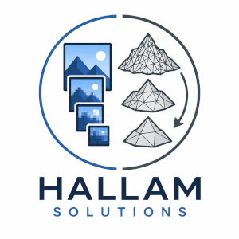
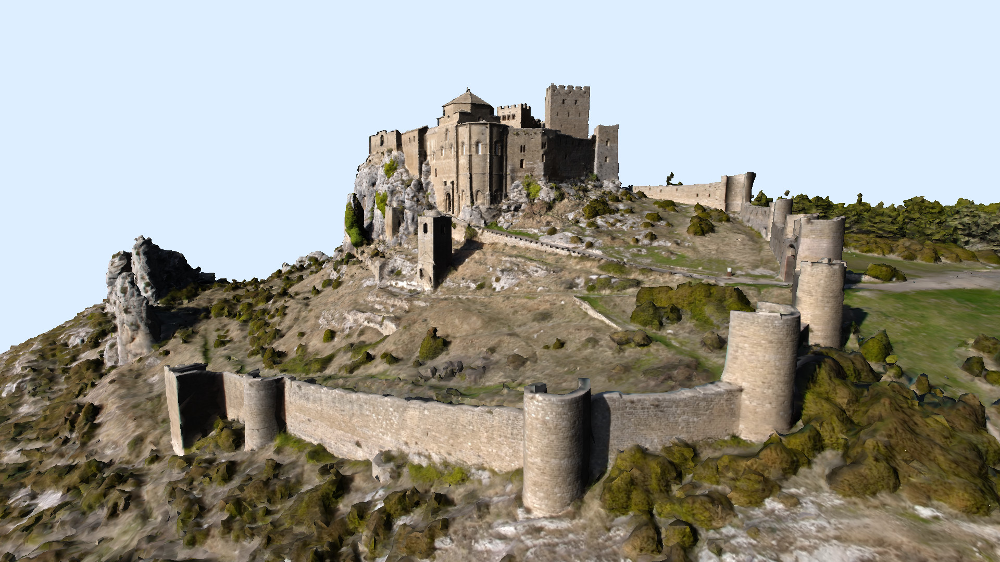
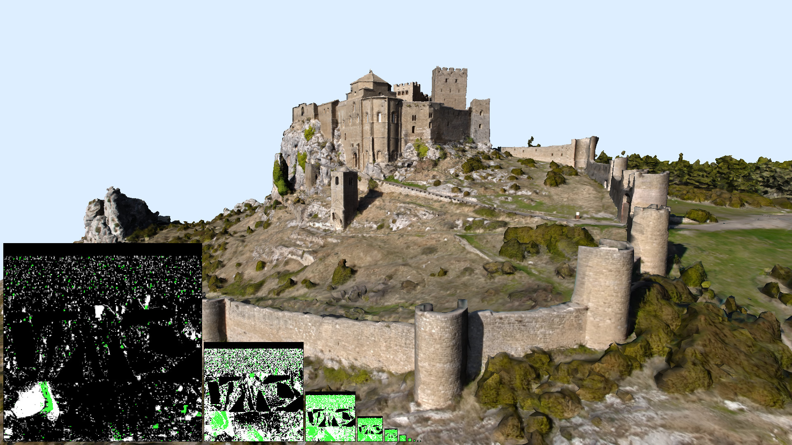
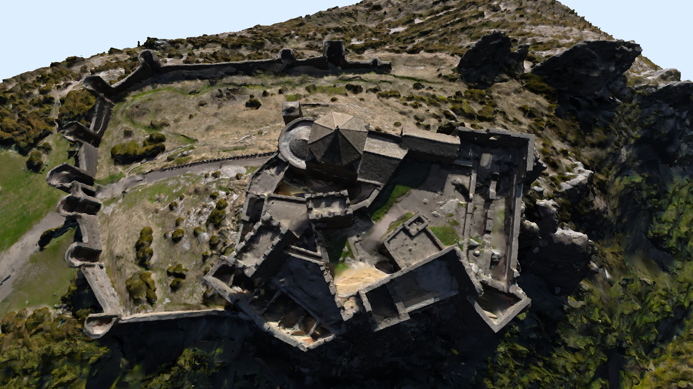
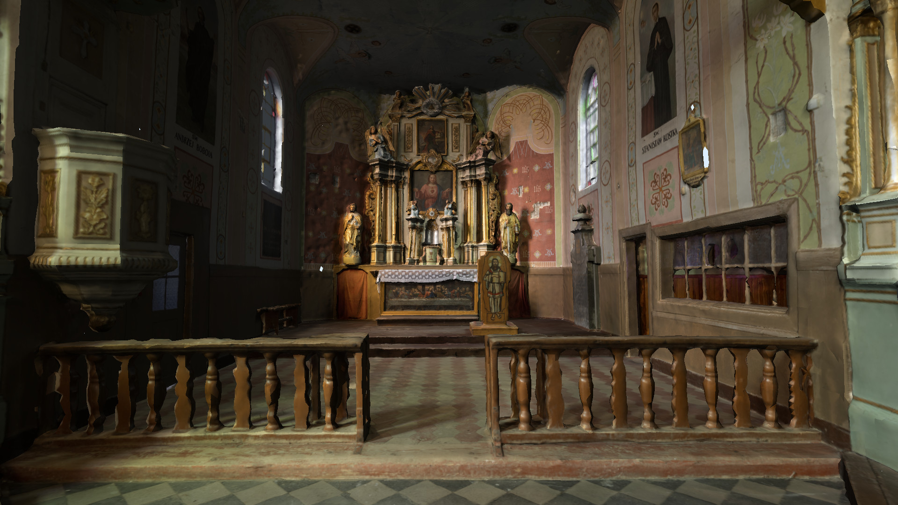

Larger Datasets
Visualise complex scenes that can exceed traditional GPU memory limits.

Hallam Solutions
Large-scale interactive visualisation
Hallam Solutions is developing visualisation technology for photogrammetry, geospatial, digital twin and cultural heritage datasets that push beyond conventional rendering limits.
Contact ChrisWhy it matters
Visualise complex scenes that can exceed traditional GPU memory limits.
Navigate large photogrammetry and spatial datasets in real time.
Stream interactive views to lightweight clients and remote users.
Designed for workstation, server and future cloud visualisation workflows.
Renderer captures



Applications
Approach
The platform combines demand-driven asset streaming, scalable CPU execution, hybrid raster and ray-traced lighting, and interactive remote rendering. The technical detail is there when needed, but the goal is simple: make very large spatial datasets easier to explore.
Christopher Hallam
Founder & Principal Engineer